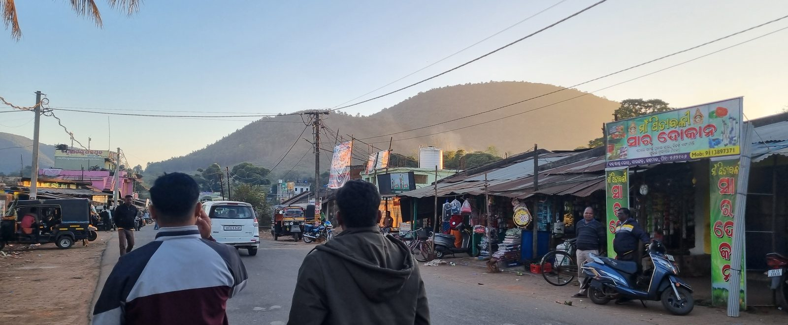
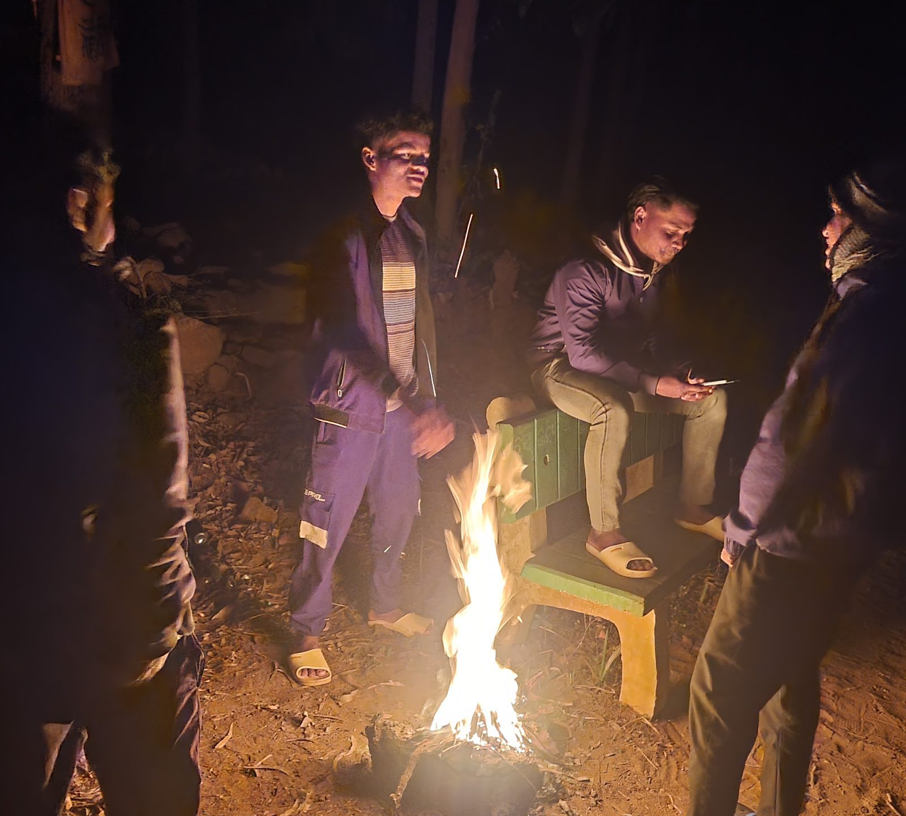
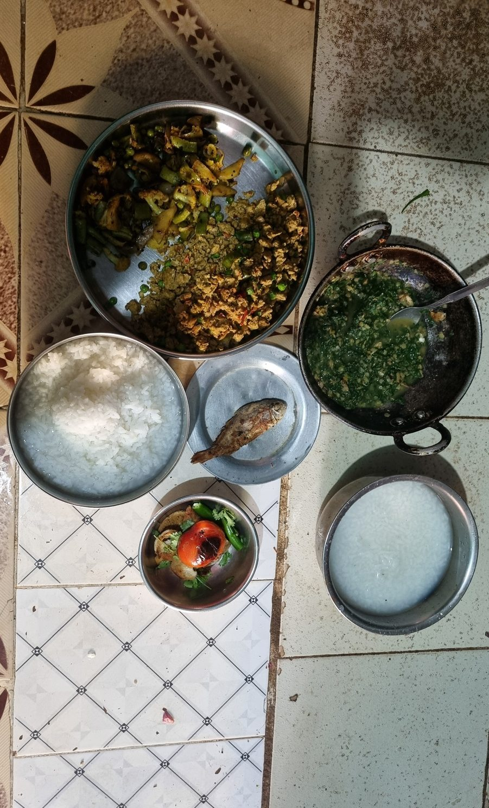

The stories the soil tells
There are hundreds of stories here. They don’t happen in grand, orchestrated events. They happen quietly at dawn, when the mist still hangs over the hills.

Sarangada · Nuagaon Block · Kandhamal · Odisha
20.227°N 84.124°E
A village where the sun comes up over the fields and goes down into the forest.
Not open · groundwork
A seven-day village life-exchange is being prepared here. Nothing on this site is bookable. What is here is what exists so far: the photographs, the notes, and the writing.

Where this stands
Now
Photographs, notes on the land, the ground research, and the writing. This site.
Next
Who hosts. Where a guest sleeps and eats. What happens if someone falls ill. What is never photographed.
Then
Two trusted guests, before any stranger. The seven days tested against a real week.
Later
No date is promised. When it changes, this page will say so first.
East to west
Morning
Open cultivated land runs out to the north and east of the village. The soil under it is deep and fine, clay enough to hold monsoon water for paddy.
A day here starts on that side, before you are ready for it.

Day
About a kilometre of it, east to west, with the market in the middle. The road in arrives from the south, from the Baliguda side.
Most of what happens in a day happens somewhere along it.

Evening
The ground rises to the south-west into hills and valleys, scrub and forest, climbing on into the Eastern Ghats.
The village sits between the two: fields on the side where the day begins, forest on the side where it ends.

Night
That is all the photograph shows, and all this page will claim. The rest of the night is for the week itself.

The week · a draft
From the archive
 Paddy terraced into the hillside
Paddy terraced into the hillside
 The whole plain under one cloud
The whole plain under one cloud
 Cattle out below the hill, paddy turning
Cattle out below the hill, paddy turning
 The tank, and the railings someone painted
The tank, and the railings someone painted
 A door in a mud wall, and the dates chalked beside it
A door in a mud wall, and the dates chalked beside it
 The school plot, being planted
The school plot, being planted

Rice, dal and greens The bike left on the ridge track at dusk
All 40 photographs
The bike left on the ridge track at dusk
All 40 photographs
The Weight of Belonging · journal
There are hundreds of stories here. They don’t happen in grand, orchestrated events. They happen quietly at dawn, when the mist still hangs over the hills.
Every version of this idea that moves fast ends the same way. Somebody books a week, arrives with a camera, gets shown a performance.